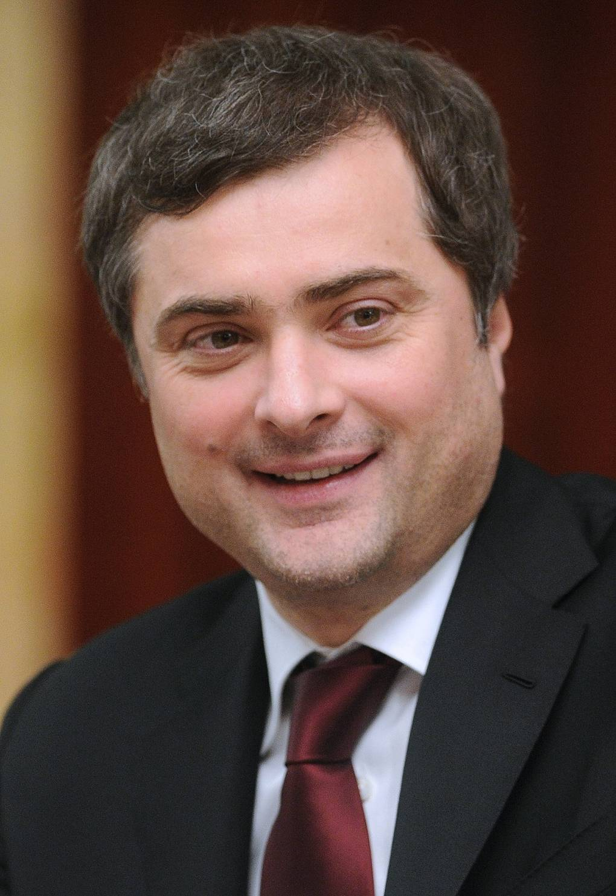

Серый кардинал Кремля.
Изобретатель «суверенной демократии».

Родился 21 сентября 1964 года. По официальной версии — в посёлке Скалистый Чечено-Ингушской АССР. Отец — чеченец Асламбек Дудаев, мать — русская. В детстве переехал с матерью в Россию, взял её фамилию — Сурков. Биография намеренно размыта: Сурков всегда предпочитал, чтобы о нём говорили как о загадке.
Учился в нескольких вузах, ни один не окончил. Служил в армии — по некоторым данным, в спецназе ГРУ. Затем работал в театре Табакова. В 90-е — переход в бизнес: рекламное агентство, структуры Михаила Ходорковского, Альфа-банк. Это формирует понимание того, как работают деньги, медиа и власть одновременно.
Приходит в администрацию президента при Ельцине. С приходом Путина становится заместителем руководителя администрации. Его задача — выстроить политическую систему, которая обеспечит управляемую стабильность. Именно он формирует то, что позже назовут «путинизмом».
Сурков создаёт концепцию «суверенной демократии»: Россия — демократическая страна, но её демократия особая, не нуждающаяся во внешней оценке. Западные стандарты — не универсальны. Это идеологическое прикрытие для монополии на власть. Параллельно создаёт молодёжные движения «Наши» и «Молодая гвардия» — управляемый патриотизм как инструмент. Факт
После протестов на Болотной площади и Сахарова Путин обвиняет Суркова в том, что тот недооценил оппозицию. Сурков уходит с поста замруководителя администрации. Назначен вице-премьером — почётная ссылка. Но это ненадолго.
Возвращается в администрацию. С 2013 года курирует украинское направление. Во время Майдана и после него именно Сурков координирует действия пророссийских сил на Украине: Крым, Донецк, Луганск. Он — архитектор «русской весны». Факт
В феврале 2020 года — внезапная отставка. Официальная версия: «смена направления в работе с Украиной». Реальная причина неизвестна. Сурков исчезает из публичного пространства. Никаких интервью, никаких назначений, никаких официальных комментариев. Где он сейчас — неизвестно.
Параллельно с государственной карьерой Сурков публиковал художественные тексты под псевдонимом «Натан Дубовицкий». Романы «Околоноля» (2009) и «Настоящее» — постмодернистская проза о власти, насилии и пустоте. Литературные критики видят в них исповедь человека, знающего систему изнутри. Интерпр.
Сурков — редкий кремлёвский чиновник, умеющий мыслить и писать. Его тексты — смесь цинизма, иронии и точного диагноза той системы, которую он сам построил.
Сурков — автор концепции системной оппозиции. ЛДПР, КПРФ, «Справедливая Россия» — партии, которые создают видимость политической конкуренции, но никогда не угрожают власти. Каждая из них курируется Кремлём. Парламент имитирует дискуссию.
Создание молодёжных провластных движений как буфера против оппозиции. «Наши», «Молодая гвардия» — тысячи молодых людей, обученных патриотической риторике. В нужный момент — выход на улицы. Управляемое гражданское общество.
Сурков сознательно культивировал информационную неопределённость: никто не знал точно, что думает Кремль. Это давало маневренность. Конкурирующие группы одновременно слышали то, что хотели услышать. Система управляла сама собой через неясность.
«Донецкая Народная Республика» и «Луганская Народная Республика» — не стихийные восстания. Это управляемые проекты, которые Сурков координировал из Москвы. Личные встречи с лидерами сепаратистов, финансирование, кадровые назначения — всё через него.
«Сурков — это человек, который придумал Россию такой, какой мы её знаем. Путинизм как система — это его изобретение. Путин был политиком. Сурков был инженером.»
«Он любил говорить, что управляет не людьми, а смыслами. Кто управляет смыслами — управляет реальностью. В этом была его философия и его гордость.»
«Статья "Долгое государство Путина" — это не пропаганда. Это холодный политологический анализ того, что он сам построил. Сурков был достаточно умён, чтобы объяснить свою систему.»
Все утверждения основаны на открытых публичных источниках. Факт — прямые первичные источники. Интерпр. — авторская интерпретация.